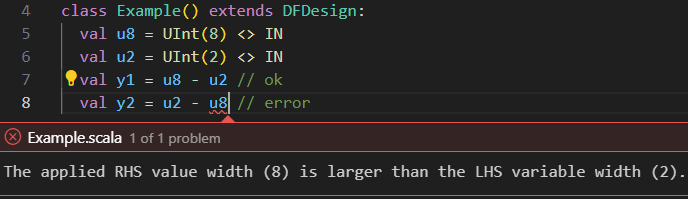
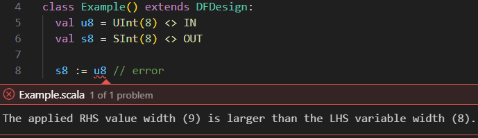

Type System
DFHDL is a Scala library and thus inherently supports type-safe and modern language constructs. This chapter covers the rules and API of this type system.
Check out the benefits of the DFHDL type system
-
 Strongly-typed
Strongly-typed
Most type checks are performed statically, enforcing strict rules that help avoid ambiguity.
//8-bit unsigned input val u8 = UInt(8) <> IN //2-bit unsigned input val u2 = UInt(2) <> IN val y1 = u8 - u2 //ok // Error prevents ambiguous behavior // when a wider num is subtracted from // a narrow num. val y2 = u2 - u8 //error
-
Bit-accurate
Each DFHDL value has a defined bit-width, which is used to enforce rules that prevent data loss.
//8-bit unsigned input val u8 = UInt(8) <> IN //8-bit signed output val s8 = SInt(8) <> OUT // Error prevents data loss when u8 is // converted to a 9-bit signed to be // assigned to s8, which is only 8-bits // wide. s8 := u8 //error
-
Composable
Types can be composed through structs or tuples to form new, combined types.
//new Pixel type as a structure //of two unsigned 8-bit numbers case class Pixel( x: UInt[8] <> VAL, y: UInt[8] <> VAL ) extends Struct val pixel = Pixel <> VAR //select and assign fields pixel.x := pixel.y -
Expandable
New types can be defined, and methods can be added for entirely new or existing types.
//new AESByte type of unsigned 8-bit num case class AESByte() extends Opaque(UInt(8)) //define addition between two AESByte //values as a xor operation extension (lhs: AESByte <> VAL) def +(rhs: AESByte <> VAL): AESByte <> DFRET = (lhs.actual ^ rhs.actual).as(AESByte) val x, y = AESByte <> VAR val z = x + y //actually XOR
DFHDL Values
Each DFHDL value is simply a Scala object that has two critical fields:
-
(Shape) Type, aka DFType
Determines the bit-width and bit-structure of the value. Currently the supported types are:
- DFHDL Bit/Boolean:
Bit/Boolean - DFHDL Bit Vector:
Bits - DFHDL Integer:
UInt/SInt/Int -
DFHDL Fix-Point (future work)
-
DFHDL Flt-Point (future work)
-
DFHDL String (future work)
- DFHDL Enumeration:
enum ... extends Encoded - DFHDL Vector:
_CellType_ X _Dim_ - DFHDL Structure:
... extends Struct - DFHDL Tuple:
(T1, T2, ..., Tn) - DFHDL Opaque:
... extends Opaque - DFHDL Double:
Double - DFHDL Time/Freq:
Time/Freq - DFHDL Unit (Void):
Unit
- DFHDL Bit/Boolean:
-
(Access) Modifier
Determines what kind of access the user has on the value. User explicit modifiers:
- Variable:
VAR[.REG][.SHARED] - Port:
IN/OUT[.REG]/INOUT - Constant:
CONST - Struct Field:
VAL - Method Param:
VAL - Method Return:
DFRET/RTRET/EDRET
Although this mechanism can be quite complex under the hood, the explicit modifiers available to the user are straightforward.
- Variable:
Internal Type-System Hierarchy (For Advanced Users)
DFHDL brings type-driven development concepts to hardware design, by creating an extensible type class hierarchy. Any DFHDL value is a Scala object instance of the class DFVal[T <: DFTypeAny, M <: ModifierAny], where T is the type (shape) of value and M is a modifier that sets additional characteristics of the DFHDL value, like if it's assignable, connectable, initializable, etc.


For example, the Scala value x which references a port declared like val x = Boolean <> IN has the type DFVal[DFBool, Modifier.Dcl].
Variable and Port Declarations
Ports are DFHDL values that define the inputs and outputs of a design. Variables are DFHDL values that represent internal design wiring, logic, or state.
Syntax
val _name_ = _dftype_ <> _modifier_ [init _const_]
_name_is the Scala value name reference for the DFHDL port/variable you constructed. The DFHDL compiler preserves this name and uses it in error messages and the final generated artifacts (e.g., Verilog module or VHDL entity port names)._name_can also be a series of names separated by commas to declare several equivalent ports/variables. More information is available under the naming section._dftype_is set according to the shape type (DFType) of the DFHDL value. Each of the supported DFTypes have their own constructors. See relevant sections for the DFHDL DFType you wish to construct.<>is the operator applied between a_dftype_and a_modifier_to construct the Scala value that represents a DFHDL variable or port accordingly. Note: the same<>operator is used as a language construct for declaring connections. Thanks to Scala method overloading,<>can be shared for both use-cases with no issues (due to the Scala argument type difference)._modifier_is set with one of the following:VAR- to construct a variableIN- to construct an input portOUT- to construct an output portINOUT- to construct a bidirectional input-output portVAR.REG/OUT.REG- to construct a registered variable or output port (available only in RT domains)VAR.SHARED- to construct a shared variable that can be assigned in more than one domain (this feature is to be used scarcely, to model unique designs like True Dual-Port RAM)
initis an optional construct to initialize the DFHDL variable/port declaration history with the applied_const_value._const_is the state history initialization value which must be a constant that is supported by the DFType_dftype_. Under DF domain only,_const_can also be represented by a Scala Tuple sequence of constant initialization values that are supported by the DFType_dftype_.
| Port/Variable declaration examples | |
|---|---|
1 2 3 4 5 6 7 8 9 10 11 12 13 14 15 16 17 | |
Transitioning from Verilog
TODO
Transitioning from VHDL
TODO
Rules
Scope
-
Variables can be declared in any DFHDL scope, except global scope, meaning within DFHDL designs, domains, interfaces, methods, processes, and conditional blocks.
1 2 3 4
//error: Port/Variable declarations cannot be global val x = Bit <> VAR class Foo extends DFDesign: val o = Bit <> OUT -
Ports can only be declared at the scopes of DFHDL designs, domains, and interfaces. Other scopes are not allowed.
1 2 3 4 5 6
class Foo extends DFDesign: val i = Boolean <> IN if (i) //error: Ports can only be directly owned by a design, a domain or an interface. val o = Bit <> OUT o := 0
Naming
Ports and variables must always be named, and cannot be anonymous.
| Anonymous declaration elaboration error example | |
|---|---|
1 2 3 | |
As you'll read later on, constants and other values can be anonymous.
Connectable
Ports and variables are connectable, meaning they can be the receiving (drain/consumer) end of a connection <> operation.
For input ports this occurs outside their design scope, while connecting to an external value.
For output ports and variables this occurs only within their design scope, while connecting to an internal value.
1 2 3 4 | |
Assignable (Mutable)
Output ports, input-output ports, and variables are assignable (mutable), when they can be the receiving (drain/consumer) end of an assignment :=/:== operation, which occurs only within their design scope. Input ports can never be assigned (are immutable). Registered ports and variables are assignable only when referencing their registers' input via .din selection (referencing a register without .din is always considered to be its output, which is immutable).
Assignment semantics are a key difference between the different design domains DFHDL has to offer. Here are some basic examples:
1 2 3 4 5 6 7 8 9 10 11 12 13 14 15 16 17 18 19 20 21 22 23 24 25 26 27 28 29 30 31 32 33 34 35 36 37 38 39 40 41 42 43 44 45 46 47 48 49 50 | |
Variability (Not Constant)
DFHDL ports and variables are never considered to be constant (even when connected/assigned only once and to a constant value) for elaboration. Later compilation stages can apply further constant propagation steps that reduce logic utilization.
1 2 3 4 5 6 | |
INOUT Port Limitation
INOUT (bidirectional) ports are generally used to define IO pins of top-level device connectivity (e.g., protocols like I2C benefit from such ability). They are not meant for inter-device wiring reduction, and thus should be used scarcely within their intended purpose. Throughout the years they were also used to workaround HDL limitations like reading from output ports in VHDL'93, or lack of interfaces. Since DFHDL has none of these limitations, we encourage you to use INOUT for their intended purpose only, as synthesis tools for FPGAs and even ASICs will not cooperate. Although, theoretically, in DF domain we can enable bidirectional communication that can later be compiled into two separate ports, there is no real value behind this.
1 2 3 | |
Grouping
Ports can be grouped together in dedicated interfaces.
Transitioning
Transitioning from Verilog
TODO
Transitioning from VHDL
TODO
Differences from Scala parameters/fields
TODO: Data validity, Number of outputs
Constant/Literal Values
In DFHDL there are three methods to construct constant DFHDL values:
- Literal value generators: These language constructs directly generate constant DFHDL values. Currently, these are:
- Constant candidates: Various Scala values can become DFHDL values, as.
Constant declaration syntax
val _name_: _dftype_ <> CONST = _value_ - Constant value propagation: Cleaners
Syntax
Rules
Unconnectable
Constant values are not connectable, meaning they can never be the receiving (drain/consumer) end of a connection <> operation.
Unassignable (Immutable)
Constant values are immutable and cannot be assigned, meaning they can never be the receiving (drain/consumer) end of an assignment :=/:== operation.
DFHDL Value Statement Order & Referencing
Any DFHDL value must be declared before it can be referenced in code. Other than this (pretty intuitive) limitation, no other limitations exist and ports, variables, constants, and other values may be freely distributed within their approved scope space. During the compilation process, you can notice that the compiler reorders the port declarations so that they always come second to constant declarations, and variables right after.
DFHDL Value Connections
After ([or during][via-connections]) a design instantiation, its ports need to be connected to other ports or values of the same DFType by applying the <> operator. Variables can also be connected and used as intermediate wiring between ports. Output ports can be directly referenced (read) without being connected to an intermediate variable. For more rules about design and port connectivity, see the relevant section.
| Successful port/variable connection example | |
|---|---|
1 2 3 4 5 6 7 8 9 10 11 12 13 14 15 16 17 18 | |
| Failed port/variable connection example | |
|---|---|
1 2 3 4 5 6 7 8 9 | |
DFHDL Value Assignment (Mutation)
Both output ports and variables are [mutable][mutability] and can be assigned with values of the same DFType and only within the scope of the design they belong to. Input ports cannot be directly assigned, and require an intermediate variable connected to them to modify their value. Generally assignments to DFHDL values are applied through the := operator. In processes under ED domains there are two kind of assignments: blocking assignments via :=, and non-blocking assignments via :==. Other domains support only blocking assignments via :=. Read more on domain semantics in the [next section][domain-semantics].
See the connectivity section for more rules about mixing connections and assignments.
| Successful port/variable connection example | |
|---|---|
1 2 3 4 5 6 7 8 9 10 11 12 13 14 15 16 17 18 19 | |
Don't use var with DFHDL values/designs
Because the semantics may get confusing, we enforced a compiler warning if a DFHDL value/design is constructed and fed into a Scala var reference. You can apply a Scala @nowarn annotation to suppress this warning.
| Warning when using a Scala `var` and suppression example | |
|---|---|
1 2 3 4 5 6 7 8 9 10 | |
Bubble Values
- RT and ED - Don't Care / Unknown
- DF - Stall
DFHDL Value Candidates
TODO: requires explanation The candidate produces a constant DFHDL value if the candidate argument is a constant.
Operation supported values for an argument of DFType T
| Bits assignment and concatenation operation candidates example | |
|---|---|
1 2 3 4 5 6 7 8 9 10 11 12 13 14 15 16 17 | |
Type Signatures and Parameterization
Every DFHDL value has a type of the form T <> M, where T is the DFHDL type (shape) and M is the modifier that determines how the value can be used.
Modifier Categories
Modifiers fall into two groups:
Declaration modifiers — used in val declarations with the <> operator:
VAR,VAR.REG,VAR.SHARED— variablesIN,OUT,OUT.REG,INOUT— ports
Type signature modifiers — used in type annotations for parameters, struct fields, and method signatures:
CONST— compile-time or elaboration-time constant parameterVAL— read-only value (struct fields, method parameters)DFRET/RTRET/EDRET— method return types (DF, RT, or ED domain)
Design Parameters
Design classes accept parameters as constructor arguments using <> CONST:
1 2 | |
Int <> CONSTfor integer parameters (used for widths, lengths, counts). Accepts any ScalaIntvalue (-2^31^ to 2^31^-1).- Typed constants like
Bits[8] <> CONSTandUInt[8] <> CONSTare also possible - Default values are optional
VAL Modifier
VAL marks a read-only value. It is used for:
- Struct field declarations:
1case class Point(x: UInt[8] <> VAL, y: UInt[8] <> VAL) extends Struct - Method/design-def parameters:
1def increment(x: UInt[8] <> VAL): UInt[8] <> DFRET = x + 1
VAL values cannot be assigned or connected — they are inputs to the computation.
Design Defs and DFRET
Design defs are functional helpers. Arguments use <> VAL, return types use <> DFRET (or RTRET/EDRET for domain-specific defs):
1 2 3 4 5 6 | |
Bounded and Unbounded Types
DFHDL types carry their size (width or length) as a Scala type parameter. There are three levels of size specificity:
Bounded — the size is a literal singleton known at compile time. All type checks happen statically:
1 2 3 | |
Parameterized bounded — the size is the singleton type of a named parameter. The compiler can track the relationship, even though the concrete value isn't known until instantiation:
1 2 3 4 | |
Unbounded — the size is bare Int, with no compile-time size information. Used when the type is too complex to express at the Scala type level (e.g., results of operations on parameterized types). The DFHDL compiler still has the required size information available during elaboration, where it is checked:
1 2 3 4 | |
Struct fields must be bounded
Struct field types cannot be unbounded. Each field must have a concrete or parameterized-bounded type:
1 2 3 4 5 | |
DFHDL Value Types
Bit/Boolean
Bit DFHDL values represent binary 1 or 0 values, whereas Boolean DFHDL values represent true or false values, respectively. The Bit and Boolean DFHDL values are generally interchangeable, and automatically converted between one and the other.
Should I use Bit or Boolean DFTypes?
Although they are interchangeable, it's generally recommended to use Boolean DFHDL values with conditional if statements, guards, or expressions, and Bit DFHDL values for everything else. There could be constant parameters that are better defined as a true or false Boolean values rather than 0 or 1 Bit values.
Why have both Bit and Boolean DFTypes?
The main reason to differentiate between Bit and Boolean is that VHDL has both std_logic and boolean types, respectively. Verilog has only a single logic or wire to represent both. Indeed VHDL'2008 has relaxed some of the type constraints, but not enough. And nevertheless, DFHDL aims to support various HDL dialects, and thus enables simple implicit or explicit conversion between these two DFType values.
DFType Constructors
Use the Bit or Boolean objects/types to construct Bit or Boolean DFHDL values, respectively.
1 2 3 4 | |
Type Signatures
Bit and Boolean have no size parameter. Type signatures: Bit <> CONST, Bit <> VAL, Boolean <> VAL, etc.
Candidates
- DFHDL
Bitvalues. - DFHDL
Booleanvalues. - Scala
1or0literal values. A regular ScalaIntis not accepted. This candidate always produces a constant DFHDL value. - Scala
Booleanvalues. This candidate always produces a constant DFHDL value.
1 2 3 4 5 6 7 8 9 10 11 12 13 14 15 16 17 18 19 20 21 22 23 24 25 26 27 28 29 | |
Bit variables accept Boolean comparison values as condidates
All comparison operators (==, !=, <, >, <=, >=) return Boolean, and can be directly assigned to Bit variables:
1 2 3 4 5 | |
if and while conditionals accept both Boolean and Bit values
if and while conditional expression and statements accept both Boolean and Bit values (no conversion is taking place). In stricter backends like vhdl.v93, an automatic conversion is applied Boolean where needed.
1 2 3 4 5 | |
Bits
Bits DFHDL values represent vectors of DFHDL Bit values as elements.
The vector bits width (length) is a positive constant number (nilable [zero-width] vectors will be supported in the future).
Differences between DFHDL Bits and DFHDL Vector of Bit
In addition to Bits, DFHDL also supports generic vectors of any DFHDL values.
One could therefore construct a generic vector with Bit as the element DFType.
This vector has a different type than Bits, since Bits is a special case, both internally
in their implementations and externally in their API. Where applicable, both Bits and generic
vector of Bits have overlapping equivalent APIs.
DFType Constructors
| Constructor | Description | Arg Constraints | Returns |
|---|---|---|---|
Bits(width) |
Construct a Bits DFType with the given width as number of bits. |
width is a positive Scala Int or constant DFHDL Int value. |
Bits[width.type] DFType |
Bits.until(sup) |
Construct a Bits DFType with the given sup supremum number the vector is expected to reach. The number of bits is set as clog2(sup). |
sup is a Scala Int or constant DFHDL Int value larger than 1. |
Bits[CLog2[width.type]] DFType |
Bits.to(max) |
Construct a Bits DFType with the given max maximum number the vector is expected to reach. The number of bits is set as clog2(max+1). |
max is a positive Scala Int or constant DFHDL Int value. |
Bits[CLog2[width.type+1]] DFType |
Bits[W] |
Construct a Bits DFType with the given W width as Scala type argument (for advanced users). |
width is a positive Scala Int or constant DFHDL Int Singleton type. |
Bits[W] DFType |
1 2 3 4 5 6 7 | |
Transitioning from Verilog
- Specifying a width instead of an index range: In Verilog bit vectors are declared with an index range that enables outliers like non-zero index start, negative indexing or changing bit order. These use-cases are rare and they are better covered using different language constructs. Therefore, DFHDL simplifies things by only requiring a single width/length argument which yields a
[width-1:0]sized vector (for generic vectors the element order the opposite). - Additional constructors: DFHDL provides additional constructs to simplify some common Verilog bit vector declaration. For example, instead of declaring
reg [$clog2(DEPTH)-1:0] addrin Verilog, in DFHDL simply declareval addr = Bits.until(DEPTH) <> VAR.
Transitioning from VHDL
- Specifying a width instead of an index range: In VHDL bit vectors are declared with an index range that enables outliers like non-zero index start, negative indexing or changing bit order. These use-cases are rare and they are better covered using different language constructs. Therefore, DFHDL simplifies things by only requiring a single width/length argument which yields a
(width-1 downto 0)sized vector (for generic vectors the element order the opposite). - Additional constructors: DFHDL provides additional constructs to simplify some common VHDL bit vector declaration. For example, instead of declaring
signal addr: std_logic_vector(clog2(DEPTH)-1 downto 0)in VHDL, in DFHDL simply declareval addr = Bits.until(DEPTH) <> VAR.
Type Signatures
- Bounded:
Bits[8],Bits[4] - Parameterized bounded:
Bits[w.type](wherew: Int <> CONST) - Unbounded:
Bits[Int]
Literal (Constant) Value Generation
Literal (constant) DFHDL Bits value generation is carried out through binary and hexadecimal string interpolation, a core Scala feature that was customized for DFHDL's exact use-case. There are also bit-accurate decimal and signed decimal interpolations available that produce UInt and SInt DFHDL values. If needed, those values can be cast to Bits. No octal interpolation is currently available or planned.
Binary Bits String-Interpolator
b"width'bin"
- bin is a sequence of
0,1, and?characters, each representing a single bit.?indicates a bit bubble. The leftest (first) character is the most-significant bit (MSB), and the rightest (last) character is the least-significant bit (LSB). - Separators
' '(space) or_(underscore) withinbinare ignored. bincan also contain interpolated ScalaStringarguments through${arg}.- width, followed by a
'(apostrophe), is optional and specifies the bit vector's width. If omitted, the minimal width is inferred from the sequence length. If specified, leading zeros are added at the left of the sequence or the sequence is truncated based on thewidth. Truncation only occurs if the MSBits being removed are zeros; otherwise, it triggers a compilation error. widthcan be an interpolated argument of either ScalaIntor a Constant DFHDLIntvalue.- Returns: A constant DFHDL
Bitsvalue with the inferred or set width.
| Binary Bits string-interpolation examples | |
|---|---|
1 2 3 4 5 6 7 8 9 10 11 12 | |
Transitioning from Verilog
This interpolation covers the Verilog binary literal use-cases, but also adds the ability for parametric width to be set. The high impedance (high-Z) use-cases will be supported in the future, likely using a different language construct.
Transitioning from VHDL
This interpolation covers the VHDL binary literal use-cases, but also adds the ability for parametric width to be set. The high impedance (high-Z) use-cases will be supported in the future, likely using a different language construct.
Hexadecimal Bits String-Interpolator
h"width'hex"
- hex is a sequence of hexadecimal characters (
0-9,A-F,a-f, and?) where?indicates a 4-bit bubble. Each character represents a 4-bit nibble, encoded such that the leftest bit is the most-significant bit.
The leftest (first) character is the most-significant nibble, and the rightest (last) character is the least-significant nibble. - Separators
' '(space) or_(underscore) withinhexare ignored. hexcan also contain interpolated ScalaStringarguments through${arg}.- Binary sequences can be embedded within
{bin}tags, allowing integration of binary bit sequences of any length, not necessarily divisible by 4, between hex nibbles. - width, followed by a
', is optional and specifies the bit vector's width. If omitted, the minimal width is inferred from the sequence length. If specified, leading zeros are added or the sequence is truncated based on thewidth. Truncation only occurs if the most significant bits being removed are zeros or bubbles; otherwise, it triggers a compilation error. widthcan be an interpolated argument of either ScalaIntor a Constant DFHDLIntvalue.- Returns: A constant DFHDL
Bitsvalue with the inferred or set width.
| Hexadecimal Bits string-interpolation examples | |
|---|---|
1 2 3 4 5 6 7 8 9 10 | |
Transitioning from Verilog
This interpolation covers the Verilog hexadecimal literal use-cases, but also adds the ability for parametric width to be set. The high impedance (high-Z) use-cases will be supported in the future, likely using a different language construct.
Transitioning from VHDL
This interpolation covers the VHDL hexadecimal literal use-cases, but also adds the ability for parametric width to be set. The high impedance (high-Z) use-cases will be supported in the future, likely using a different language construct.
Candidates
- DFHDL
Bitsvalues - DFHDL
BitorBooleanvalues. This candidate produces a single bitBits[1]vector. - DFHDL
UIntvalues - Scala
Tuplecombination of any DFHDL values and1/0literal values. This candidate performs bit concatenation of all values, according their order in the tuple, encoded from the most-significant value position down to the least-significant value position. - Application-only candidate - Same-Element Vector (
all(elem)).
1 2 3 4 5 6 7 8 9 10 11 12 13 14 15 16 17 18 | |
Bits does not accept plain integer candidates
Unlike UInt/SInt, Bits values cannot be initialized or assigned with plain integers. Use all(0) for zero initialization, or a sized literal:
1 2 3 4 5 6 7 8 | |
Concatenated Assignment
DFHDL supports a special-case assignment of concatenated DFHDL Bits variables, using a Scala Tuple syntax on LHS of the assignment operator. Both LHS and RHS bits width must be the same. This assignment is just syntactic sugar for multiple separate assignments and carried out during the design elaboration. The assignment ordering is from the first value at most-significant position down to the last value at least-significant position.
1 2 3 4 5 6 | |
1 2 3 4 5 6 7 8 | |
Runnable example
import dfhdl.*
//print the code after elaboration
given options.ElaborationOptions.PrintDFHDLCode = true
//set mode to elaborate only
given options.AppOptions.AppMode = options.AppOptions.AppMode.elaborate
class Foo extends DFDesign:
val i4 = Bits(4) <> IN
val b2 = Bits(2) <> OUT
val b3 = Bits(3) <> OUT
val b5 = Bits(5) <> OUT
(b2, b5, b3) := (b"101", i4, b"111")UInt/SInt/Int
DFHDL provides three decimal numeric types:
UInt- Unsigned bit-accurate integer valuesSInt- Signed bit-accurate integer valuesInt- 32-bit integer values (used mainly for parameters). In operations withUIntorSInt, both ScalaIntand DFHDLIntact as wildcards that adapt to the bit-accurate value's sign and width.
DFType Constructors
| Constructor | Description | Arg Constraints | Returns |
|---|---|---|---|
UInt(width) |
Construct an unsigned integer DFType with the given width as number of bits. |
width is a positive Scala Int or constant DFHDL Int value. |
UInt[width.type] DFType |
UInt.until(sup) |
Construct an unsigned integer DFType with the given sup supremum number the value is expected to reach. The number of bits is set as clog2(sup). |
sup is a Scala Int or constant DFHDL Int value larger than 1. UInt.until(1) is invalid (would produce 0-bit width). |
UInt[CLog2[width.type]] DFType |
UInt.to(max) |
Construct an unsigned integer DFType with the given max maximum number the value is expected to reach. The number of bits is set as clog2(max+1). |
max is a positive Scala Int or constant DFHDL Int value. UInt.to(1) is valid (produces 1-bit width). |
UInt[CLog2[width.type+1]] DFType |
SInt(width) |
Construct a signed integer DFType with the given width as number of bits. |
width is a positive Scala Int or constant DFHDL Int value. |
SInt[width.type] DFType |
Int |
Construct a constant integer DFType. Used mainly for parameters. | None | Int DFType |
Type Signatures
- Bounded:
UInt[8],SInt[16] - Parameterized bounded:
UInt[w.type],SInt[w.type](wherew: Int <> CONST) - Unbounded:
UInt[Int],SInt[Int] Inthas no size parameter:Int <> CONST,Int <> VAL
Candidates
- DFHDL decimal values of the same type
- DFHDL
Bitsvalues (via.uintor.sintcasting) - Scala numeric values (Int, Long, etc.) for constant values
- Decimal literals (string interpolation values)
Constant Generation
Unsigned Decimal String-Interpolator
The unsigned decimal string interpolator d creates unsigned integer constants (UInt) from decimal values. For negative values, use the signed decimal string-interpolator.
d"width'dec"
- dec is a sequence of decimal characters ('0'-'9'). Negative values are not allowed.
- width followed by a
'is optional and specifies the exact width of the integer's bit representation - Separators
_(underscore) and,(comma) withindecare ignored - If width is omitted, it is inferred from the value's size
- If specified, the output is padded with zeros
- Returns
UInt[W], whereWis the width in bits - An error occurs if the specified width is less than required to represent the value
- When used with a DFHDL
Intparameter, the interpolation binds it as unsigned
1 2 3 4 5 6 7 8 | |
Signed Decimal String-Interpolator
The signed decimal string interpolator sd creates signed integer constants (SInt) from decimal values.
sd"width'dec"
- dec is a sequence of decimal characters ('0'-'9') with an optional prefix
-for negative values - width followed by a
'is optional and specifies the exact width of the integer's bit representation - Separators
_(underscore) and,(comma) withindecare ignored - Output is always a signed integer type
SInt[W], regardless of whether the value is negative or natural - Width is always at least 2 bits to accommodate the sign bit
- An error occurs if the specified width is less than required to represent the value including the sign bit
- When used with a DFHDL
Intparameter, the interpolation binds it as signed
1 2 3 4 5 6 7 8 | |
Examples
1 2 3 4 5 6 7 8 9 10 11 12 13 14 15 16 17 | |
Enumeration
DFHDL supports enumerated types through Scala's enum feature with special encoding traits. Enums provide a type-safe way to represent a fixed set of values.
Enum Type Definition
1 2 | |
Type Signatures
MyEnum <> VAL, MyEnum <> CONST. The enum name itself is the type — no size parameter.
Encoding Types
DFHDL supports several encoding schemes for enums:
-
Binary Encoded (default)
1 2
enum MyEnum extends Encoded: case A, B, C, D // Encoded as 00,01,10,11 -
One-Hot Encoded
1 2
enum MyEnum extends Encoded.OneHot: case A, B, C // Encoded as 001,010,100 -
Gray Encoded
1 2
enum MyEnum extends Encoded.Gray: case A, B, C // Encoded as 00,01,11 -
Custom Start Value
1 2
enum MyEnum extends Encoded.StartAt(4): case A, B, C // Encoded as 100,101,110 -
Manual Encoding
1 2 3 4
enum MyEnum(val value: UInt[8] <> CONST) extends Encoded.Manual(8): case A extends MyEnum(200) case B extends MyEnum(100) case C extends MyEnum(50)Note: the Manual encoding enum class must declare a constructor parameter
(val value: UInt[N] <> CONST)and the bit widthNmust match the argument toEncoded.Manual(N). Eachcasemust explicitly extend the enum class and pass a constant value. Omitting the constructor parameter will cause a compile error.
Pattern Matching
Enums can be used in pattern matching expressions:
1 2 3 4 5 6 | |
Examples
1 2 3 4 5 6 7 8 9 10 11 12 13 14 15 16 | |
Vector
DFHDL vectors allow creating arrays of any DFHDL type. Unlike Bits which is specialized for bit vectors, generic vectors can hold any DFHDL type and support multi-dimensional arrays.
Vector Type Construction
The vector type is constructed using the X operator between a base type and dimension:
1 | |
Examples:
1 2 3 | |
Type Signatures
- Bounded:
UInt[8] X 4,Bits[8] X 4 X 4 - Parameterized bounded:
UInt[4] X len.type(wherelen: Int <> CONST) - Unbounded:
Bits[8] X Int - Both element type and dimensions can be parameterized independently
Initialization
Vectors can be initialized in several ways:
1 2 3 4 5 6 7 8 | |
Multi-dimensional Vectors
Multi-dimensional vectors are created by chaining X operators:
1 2 3 4 5 6 7 8 9 | |
Memory/RAM Implementation
Vectors are commonly used to implement memories and RAMs:
1 2 3 4 5 6 7 8 9 | |
File Initialization
Vectors support initialization from files in various formats:
1 2 3 4 5 | |
Struct
DFHDL structures allow creating composite types by combining multiple DFHDL values into a single type. Structs are defined using Scala case classes that extend the Struct trait.
Struct Type Definition
1 2 3 4 5 | |
Type Signatures
MyStruct <> VAL, MyStruct <> CONST. The struct name is the type. Struct fields must use bounded types (no UInt[Int] in fields).
Field Access and Assignment
Fields are accessed using dot notation and can be assigned individually:
1 2 3 4 | |
Nested Structs
Structs can be nested to create more complex data structures:
1 2 3 4 5 6 | |
Pattern Matching
Structs support pattern matching for field extraction:
1 2 3 4 | |
Examples
1 2 3 4 5 6 7 8 9 10 11 12 13 14 15 16 17 | |
Tuple
DFHDL tuples provide a way to group multiple DFHDL values together without defining a named structure. They are similar to Scala tuples but operate on DFHDL values.
Tuple Type Construction
1 | |
Type Signatures
(UInt[8], Bit) <> VAL, (Bits[Int], Bit) <> CONST. Elements can be individually bounded or unbounded.
Examples
1 2 3 4 5 6 7 8 9 | |
Element Access
Tuple elements can be accessed using ._N notation or pattern matching:
1 2 3 4 5 | |
Opaque
Opaque types allow creating new DFHDL types that wrap existing types while hiding their internal representation. This is useful for creating abstraction layers and type-safe interfaces.
Opaque Type Definition
1 2 3 4 5 6 7 8 | |
Type Signatures
MyOpaque <> VAL, MyOpaque <> CONST. The opaque name is the type.
Usage
1 2 3 | |
Examples
1 2 3 4 5 6 7 8 9 10 11 12 | |
Double
DFHDL Double values represent IEEE-754 double-precision floating-point numbers.
Type Construction
1 | |
Type Signatures
Double <> VAL, Double <> CONST. No size parameter (always 64 bits).
Time/Freq
DFHDL provides special types for representing time and frequency values in hardware designs through physical units. These types help ensure correct timing specifications and frequency calculations.
Time Values
Time values can be created using various unit suffixes:
1 2 3 4 5 6 7 8 9 | |
Both integer and floating-point values can be used with time units:
1 2 | |
Frequency Values
Frequency values can be specified using standard frequency units:
1 2 3 4 5 | |
Like time values, both integer and floating-point values are supported:
1 2 | |
Usage in RT Domains
Physical values are particularly useful when configuring RT domains and specifying clock frequencies:
1 2 3 4 5 6 7 8 9 10 11 12 | |
Cycles in RT Domain
In RT domains, you can also specify cycle counts using the .cy unit:
1 2 | |
Note: The .cy unit is only available within register-transfer (RT) domains.
Unit (Void)
The Unit type in DFHDL represents a void or no-value type, similar to Scala's Unit type. It's typically used when an operation doesn't need to return a meaningful value.
Usage
1 2 3 4 5 6 7 8 | |
Common Use Cases
- Side-effect operations
- Void method returns
- Assignment results
- Process bodies in event-driven designs
1 2 3 4 5 6 | |
Operations
Constant Propagation
When all operands of an expression are constants (CONST), the result is also a constant. This includes Scala Int literals, DFHDL Int parameters, and bit-accurate constants created with d"" or sd"".
1 2 3 4 5 6 7 | |
Conversions and Casts
The diagram below shows the conversion/cast paths between DFHDL types. Solid arrows are simple casts that preserve width; dashed arrows involve width changes.


| From | To | Method | From | To | Method |
|---|---|---|---|---|---|
T |
Bits |
.bits |
Bit |
Boolean |
.bool |
Bits |
T |
.as(T) |
Boolean |
Bit |
.bit |
Bits(w) |
UInt(w) |
.uint |
Bit/Boolean |
Bits(1) |
.bits |
Bits(w) |
SInt(w) |
.sint |
Bit/Boolean |
Bits(w) |
.toBits(w) |
UInt(w) |
SInt(w+1) |
.signed |
Bit/Boolean |
UInt(w) |
.toUInt(w) |
UInt/SInt |
Int |
.ToInt |
Bit/Boolean |
SInt(w) |
.toSInt(w) |
Any Type to/from Bits: .bits and .as(T)
Every DFHDL type can be converted to its raw bit representation with .bits. The inverse operation, .as(T), reinterprets a Bits value as a target type T, provided the bit widths match exactly:
1 2 3 | |
This also works with composite types such as enums, structs, and opaques:
1 2 3 | |
Bits to UInt/SInt: .uint and .sint
These are shorthand conversions from Bits that preserve width. The same bits are simply reinterpreted as unsigned or signed:
1 2 3 | |
UInt to SInt: .signed
Converting an unsigned value to signed requires an extra bit for the sign, so .signed widens the result by one bit:
1 2 | |
To get an SInt with the same width (reinterpreting the bit pattern without expanding), go through Bits:
1 | |
Bit and Boolean Conversions
Bit is the hardware single-bit type and Boolean is the logical type. They are convertible to each other with .bit and .bool:
1 2 3 | |
Both Bit and Boolean can be widened (zero-extended) into Bits, UInt, or SInt with an explicit target width:
1 2 3 4 | |
When the value is 1, these produce the value 1 at the given width (not sign-extended). The single-bit .bits conversion is also available, returning Bits(1).
Enum to UInt: .uint
Enum values can be converted to their underlying unsigned integer representation:
1 2 | |
Bit Selection and Slicing
Applies to: Bits, UInt, SInt
- Range slice:
value(hi, lo)extracts bitshidown tolo, returning a narrower value of the same type (Bits→Bits,UInt→UInt,SInt→SInt). - Single-bit access:
value(idx)returns the bit at positionidx(asBit). The index can be a static integer or a dynamicUIntvariable.
1 2 3 4 5 6 7 8 9 10 11 12 13 14 15 16 | |
Dynamic bit indexing
You can index into a bit-vector value using a UInt variable, not just integer literals. The index must be a UInt whose width equals clog2(bits_width). For example, indexing into Bits(8) requires a UInt(3) index. If the width does not match, the compiler will report an error and suggest using .resize to automatically adjust the width.
Dynamic indexing works for both reads and writes:
1 2 3 4 5 6 7 8 | |
When the index variable is wider or narrower than needed, use .resize to automatically adjust it to the required width:
1 2 3 | |
Width Adjustment
Applies to: Bits, UInt, SInt
.resize(N)sets the width to exactlyNbits. ForUIntandBits, widening zero-extends; forSInt, widening sign-extends. Narrowing truncates the most-significant bits..resize(no argument) automatically adjusts the width to match the assignment or operation context; narrowing or widening as needed.
1 2 3 4 5 6 7 8 9 10 11 12 13 14 | |
Bit Concatenation
Applies to: Bits, UInt, SInt
Multiple bit-vector values can be concatenated using Scala tuple syntax with .toBits:
1 2 3 4 | |
Values are concatenated from the first (most-significant) to the last (least-significant) position.
Logical Operations
Applies to: Bit, Boolean
Logical operations' return type always matches the LHS argument's type. These operations propagate constant modifiers, meaning that if all arguments are constant, the returned value is also a constant.
| Operation | Description | LHS/RHS Constraints | Returns |
|---|---|---|---|
lhs && rhs |
Logical AND | The LHS argument must be a Bit/Boolean DFHDL value. The RHS must be a Bit/Boolean candidate. |
LHS-Type DFHDL value |
lhs || rhs |
Logical OR | The LHS argument must be a Bit/Boolean DFHDL value. The RHS must be a Bit/Boolean candidate. |
LHS-Type DFHDL value |
lhs & rhs |
Logical AND | The LHS argument must be a Bit/Boolean DFHDL value. The RHS must be a Bit/Boolean candidate. |
LHS-Type DFHDL value |
lhs | rhs |
Logical OR | The LHS argument must be a Bit/Boolean DFHDL value. The RHS must be a Bit/Boolean candidate. |
LHS-Type DFHDL value |
lhs ^ rhs |
Logical XOR | The LHS argument must be a Bit/Boolean DFHDL value. The RHS must be a Bit/Boolean candidate. |
LHS-Type DFHDL value |
!lhs |
Logical NOT | The argument must be a Bit/Boolean DFHDL value. |
LHS-Type DFHDL value |
1 2 3 4 5 6 7 8 9 10 11 12 13 14 15 16 17 18 19 20 21 22 23 24 25 | |
Logical ||/&& and bitwise |/& on Bit and Boolean values
In DFHDL, the operators || and && are equivalent to | and &, respectively, when applied on either DFHDL Bit or Boolean types. In Verilog, the actual operator printed depends on the LHS argument of the operation: if it's Bit, the operator will be |/&; if it's Boolean, the operator will be ||/&&.
Transitioning from Verilog
Under the ED domain, the following operations are equivalent:
| DFHDL Operation | Verilog Operation (Bit LHS) | Verilog Operation (Boolean LHS) |
|---|---|---|
lhs && rhs |
lhs & rhs |
lhs && rhs |
lhs || rhs |
lhs | rhs |
lhs || rhs |
lhs & rhs |
lhs & rhs |
lhs && rhs |
lhs | rhs |
lhs | rhs |
lhs || rhs |
lhs ^ rhs |
lhs ^ rhs |
lhs ^ rhs |
!lhs |
!lhs |
!lhs |
Transitioning from VHDL
Under the ED domain, the following operations are equivalent:
| DFHDL Operation | VHDL Operation |
|---|---|
lhs && rhs |
lhs and rhs |
lhs || rhs |
lhs or rhs |
lhs ^ rhs |
lhs xor rhs |
!lhs |
not lhs |
Bit Reduction Operations (.&, .|, .^)
Applies to: Bits, UInt (via implicit conversion to Bits)
Reduction operators fold all bits of a Bits vector into a single Bit value. They are the DFHDL equivalents of Verilog's unary reduction operators (&v, |v, ^v):
| Operation | Description | Returns |
|---|---|---|
bits.& |
AND reduction -- 1 if all bits are 1 |
Bit |
bits.| |
OR reduction -- 1 if any bit is 1 |
Bit |
bits.^ |
XOR reduction -- 1 if an odd number of bits are 1 (parity) |
Bit |
1 2 3 4 | |
Transitioning from Verilog
| Verilog | DFHDL | Notes |
|---|---|---|
&v (AND reduce) |
v.& |
All bits must be 1 |
|v (OR reduce) |
v.| |
At least one bit is 1 |
^v (XOR reduce) |
v.^ |
Parity (odd number of 1s) |
~&v (NAND reduce) |
!v.& |
Not all bits are 1 |
~|v (NOR reduce) |
!v.| |
No bits are 1 |
~^v (XNOR reduce) |
!v.^ |
Even parity |
Selection (.sel)
Condition: Bit, Boolean. Arguments: any DFHDL type.
The .sel operation is a conditional selection — equivalent to Verilog's ternary operator cond ? onTrue : onFalse. It selects between two values based on a Bit or Boolean condition:
| Operation | Description | Returns |
|---|---|---|
cond.sel(onTrue, onFalse) |
Select onTrue when cond is true/1, onFalse otherwise |
Same type as the arguments |
The onTrue and onFalse arguments can be any DFHDL type — UInt, SInt, Bits, Enum, Struct, etc. They can also be Scala literals constant parameters. The result type is determined by whichever argument is a DFHDL value (the other is auto-converted via type conversion):
1 2 3 4 5 6 7 8 9 10 11 12 13 14 15 16 | |
Prefer if/match for complex conditions
For simple one-level selections, .sel is concise and maps directly to Verilog's ternary. However, nesting or chaining .sel operations (e.g., a.sel(b.sel(x, y), z)) quickly becomes unreadable. For complex conditional logic, use if/else or match expressions instead — they are clearer and produce equivalent hardware.
Transitioning from Verilog
The .sel operation compiles to Verilog's ternary operator:
| DFHDL | Verilog |
|---|---|
cond.sel(a, b) |
cond ? a : b |
Transitioning from VHDL
VHDL has no equivalent to Verilog's ternary expression. The DFHDL-generated VHDL package includes bool_sel functions that implement this behavior, with dedicated overloads generated for each type as required.
| DFHDL | Generated VHDL |
|---|---|
cond.sel(a, b) |
bool_sel(cond, a, b) |
Arithmetic Operations (+, -, *, /, %)
Applies to: UInt, SInt, Bits (via implicit conversion to UInt), Int, Double (% not available for Double)
| Operation | Description | Returns |
|---|---|---|
lhs + rhs |
Addition | Commutative: widest, most signed |
lhs - rhs |
Subtraction | Same type as LHS |
lhs * rhs |
Multiplication | Commutative: widest, most signed |
lhs / rhs |
Division | Same type as LHS |
lhs % rhs |
Modulo | Same type as LHS |
lhs max rhs |
Maximum | Commutative: widest, most signed |
lhs min rhs |
Minimum | Commutative: widest, most signed |
Bit-Accurate Type Constraints (UInt, SInt)
Commutative operations (+, *, max, min) produce a result that is as wide and as signed as possible given both operands. The narrower operand is resized to match. Operand order does not affect the result type.
Non-commutative operations (-, /, %) use the LHS type as the result. The RHS is resized to match the LHS before the operation is applied. The LHS must be at least as wide and at least as signed as the RHS.
Commutative result type rules (+, *, max, min)
The result is signed if either operand is signed. When mixing signed and unsigned, the unsigned operand is implicitly sign-extended by 1 bit (gaining a 0 sign bit).
| LHS Type | RHS Type | Result Type |
|---|---|---|
UInt[LW] |
UInt[RW] |
UInt[Max[LW, RW]] |
SInt[LW] |
SInt[RW] |
SInt[Max[LW, RW]] |
SInt[LW] |
UInt[RW] |
SInt[Max[LW, RW + 1]] |
UInt[LW] |
SInt[RW] |
SInt[Max[LW + 1, RW]] |
Non-commutative result type rules (-, /, %)
Sign rule -- The LHS sign must be greater than or equal to the RHS sign (signed >= unsigned):
| LHS | RHS | Allowed | Note |
|---|---|---|---|
UInt[W1] |
UInt[W2] |
Yes | W1 >= W2 |
SInt[W1] |
SInt[W2] |
Yes | W1 >= W2 |
SInt[W1] |
UInt[W2] |
Yes | W1 >= W2 + 1 (RHS is implicitly widened by 1 bit for the sign bit) |
UInt[W1] |
SInt[W2] |
No | Compile error: an explicit conversion is required |
Width rule -- The LHS width must be greater than or equal to the (effective) RHS width. When applying SInt op UInt, the effective RHS width is RHS width + 1 because the unsigned value gains an implicit sign bit.
Wildcard Int Values
Both Scala Int values and DFHDL Int parameters (Int <> CONST) act as wildcards when used in operations with bit-accurate UInt or SInt values. The wildcard Int value adapts to the bit-accurate value's sign and width. If the wildcard Int value does not fit in the bit-accurate value's range or has incompatible sign, an error is generated.
1 2 3 4 5 6 7 8 9 10 11 12 13 14 15 16 17 18 19 20 21 22 | |
See Wildcard Arithmetic Value Checking for details on when these checks occur (compile-time, elaboration-time, or synthesis-time).
Bits values in arithmetic
Bits values are implicit UInt candidates, so they can participate in arithmetic directly. The compiler automatically inserts .uint conversions on the operands and .bits on the result:
1 2 3 | |
1 | |
1 2 3 4 5 6 7 8 9 10 11 12 13 14 15 16 17 18 19 20 21 22 23 24 25 26 27 28 29 30 31 32 33 34 | |
Overflow and automatic carry promotion
Standard arithmetic operations wrap on overflow. For example, d"8'255" + d"8'1" produces d"8'0". Use the carry variants (+^, -^, *^) described below to get a wider result that preserves the full value.
However, when an anonymous arithmetic expression (+, -, *) is assigned or connected to a variable that is wider than the operation's result, the operation is automatically promoted to a carry operation. This matches Verilog's behavior where the assignment target width determines the operation width. The carry result is then resized to fit the target if needed.
1 2 3 4 5 6 7 8 9 10 11 | |
Implicit Scala Int and Verilog-semantics mismatch
In Verilog, unsized integer literals are 32-bit. When such a literal appears in an expression like (a + b + c + d) / 4, Verilog's context-dependent width propagation widens the entire expression to 32 bits, preventing intermediate overflow.
In DFHDL, a Scala Int literal like 4 is implicitly converted to the minimum bit-accurate width (UInt[3] for value 4). Each + independently uses the LHS width, so intermediate additions stay at the LHS width (e.g., 8 bits) and can overflow before the / is applied. Similarly, the Verilog pattern of "forcing larger evaluation" by adding a zero constant (e.g., (a + b + 0) >> 1) does not widen the expression in DFHDL.
DFHDL issues an elaboration warning when it detects these patterns:
1. Non-modular operation with implicit Int and overflowing chain:
A / or % operation has an implicit Scala Int (or DFHDL Int) operand, and the other operand contains anonymous sub-32-bit +/-/* operations.
1 2 3 4 | |
2. Shift with implicit Int inside the expression chain ("forcing larger evaluation"):
A >> or << operation whose LHS expression contains both an implicit Int operand and sub-32-bit +/-/* operations.
1 2 | |
3. Assignment to wider target with implicit Int in the chain:
An anonymous expression assigned to a wider target contains both an implicit Int and sub-32-bit +/-/* operations.
1 2 3 4 5 | |
No warning is issued when:
- The expression uses carry operations (
+^,-^,*^), which widen the result. - The integer constant is an explicit bit-accurate literal (e.g.,
d"3'4"). - The bit-accurate expression width is already 32 bits or wider.
- The implicit
Intis only used in modular operations (+,-,*) assigned to a same-width target.
Mitigation strategies:
1 2 3 4 5 6 7 8 9 10 11 12 | |
Carry Arithmetic (+^, -^, *^)
Applies to: UInt, SInt
Carry operations widen the result to prevent overflow. Mixed signedness is allowed -- the result is signed if either operand is signed. When mixing signs, the unsigned operand is sign-extended by 1 bit.
Carry addition and subtraction (+^, -^):
| LHS Type | RHS Type | Result Type |
|---|---|---|
UInt[LW] |
UInt[RW] |
UInt[Max[LW, RW] + 1] |
SInt[LW] |
SInt[RW] |
SInt[Max[LW, RW] + 1] |
SInt[LW] |
UInt[RW] |
SInt[Max[LW, RW + 1] + 1] |
UInt[LW] |
SInt[RW] |
SInt[Max[LW + 1, RW] + 1] |
Carry multiplication (*^):
| LHS Type | RHS Type | Result Type |
|---|---|---|
UInt[LW] |
UInt[RW] |
UInt[LW + RW] |
SInt[LW] |
SInt[RW] |
SInt[LW + RW] |
SInt[LW] |
UInt[RW] |
SInt[LW + RW + 1] |
UInt[LW] |
SInt[RW] |
SInt[LW + 1 + RW] |
1 2 3 4 5 6 7 8 9 10 11 12 13 14 15 16 17 18 19 | |
Comparison Operations (==, !=, <, >, <=, >=)
Applies to: UInt, SInt, Int, Double (all comparisons); Bits, Enum, Struct, Tuple (==/!= only)
Decimal Comparisons
Comparison operations on UInt/SInt return a Boolean DFHDL value and have stricter constraints than arithmetic:
| Operation | Description | Returns |
|---|---|---|
lhs == rhs |
Equal | Boolean |
lhs != rhs |
Not equal | Boolean |
lhs < rhs |
Less than | Boolean |
lhs > rhs |
Greater than | Boolean |
lhs <= rhs |
Less than or equal | Boolean |
lhs >= rhs |
Greater than or equal | Boolean |
Unlike arithmetic operations which use relaxed rules (LHS sign >= RHS sign, LHS width >= RHS width), comparisons require exact matching:
- Sign: Must match exactly (
UIntwithUInt,SIntwithSInt). - Width: Must match exactly (both operands must have the same bit width).
- Scala
Intliterals: The literal's bit width (adjusted +1 if the DFHDL value is signed and the literal is positive) must fit within the DFHDL value's width.
1 2 3 4 5 6 7 8 9 10 11 12 13 14 15 16 17 18 19 20 21 | |
Scala Int constants auto-lift in comparisons
Plain Scala Int values can be used directly in comparisons and arithmetic with DFHDL typed variables. No explicit coercion is needed:
1 2 3 4 | |
Bits Comparisons
Bits values support == and != with other Bits values of the same width, with all(0), all(1), or with sized literals (d"...", h"...", b"..."). Plain Scala Int literals cannot be compared directly with Bits -- use a sized literal or convert to .uint first:
1 2 3 4 5 6 7 8 9 10 | |
Enum, Struct, and Tuple Comparisons
Enums, structs, and tuples support equality comparisons (== and !=) between values of the same type:
1 2 3 4 5 6 7 8 9 10 11 | |
Shift Operations (<<, >>)
Applies to: Bits, UInt, SInt
| Operation | Description | LHS/RHS Constraints | Returns |
|---|---|---|---|
lhs << rhs |
Left shift | LHS: Bits/UInt/SInt, RHS: unsigned or Int |
Same type as LHS |
lhs >> rhs |
Right shift (logical for Bits/UInt, arithmetic for SInt) |
LHS: Bits/UInt/SInt, RHS: unsigned or Int |
Same type as LHS |
The >> operator is type-aware: on UInt and Bits it performs a logical (zero-filling) right shift, and on SInt it performs an arithmetic (sign-extending) right shift. There is no separate >>> operator in DFHDL -- the operand type determines the behavior.
1 2 3 4 5 6 7 | |
Max/Min Operations (max, min)
Applies to: Int, Double
| Operation | Description | Returns |
|---|---|---|
lhs max rhs |
Maximum of two values | Same type |
lhs min rhs |
Minimum of two values | Same type |
1 2 3 4 5 6 7 8 | |
Physical Arithmetic (Time, Freq)
Applies to: Time, Freq
Physical types follow dimensional analysis rules. Operations between Time and Freq produce dimensionally correct results.
| Operation | LHS | RHS | Returns |
|---|---|---|---|
lhs + rhs |
Time |
Time |
Time |
lhs - rhs |
Time |
Time |
Time |
lhs * rhs |
Time |
Number | Time |
lhs * rhs |
Freq |
Number | Freq |
lhs * rhs |
Time |
Freq |
Number |
lhs * rhs |
Freq |
Time |
Number |
lhs / rhs |
Time |
Number | Time |
lhs / rhs |
Freq |
Number | Freq |
lhs / rhs |
Time |
Time |
Number |
lhs / rhs |
Freq |
Freq |
Number |
lhs / rhs |
Number | Time |
Freq |
lhs / rhs |
Number | Freq |
Time |
1 2 3 4 5 6 7 8 9 10 11 | |
Cycle-based waits in RT domains
The .cy unit creates cycle-count values for use with .wait in register-transfer domains:
1 2 | |
Int Parameter Operations (**, clog2)
Applies to: Int (constant parameters)
These operations are available for Scala Int or DFHDL Int <> CONST values and are primarily used for compile-time calculations such as computing bit widths.
| Operation | Description | Returns |
|---|---|---|
lhs ** rhs |
Power (exponentiation) | Int |
clog2(value) |
Ceiling of log base 2 | Int |
1 2 3 4 | |
Avoid using clog2 directly for widths
A common anti-pattern is using clog2 to declare the width of bit-accurate values:
1 2 3 | |
.until or .to constructors which handle this automatically and are more readable:
1 2 3 | |
.until and .to.
Non-constant DFHDL Int values
Non-constant DFHDL Int values (e.g., Int <> VAR) are possible and support the same arithmetic operations (+, -, *, /, %). However, they are discouraged for synthesizable designs because they map to a fixed 32-bit signed representation -- use SInt[32] instead for explicit control over the hardware. For simulation purposes, non-constant Int values are acceptable as long as the 32-bit width limitation is understood.
Slicing bits from a DFHDL Int
To extract a partial bit range from a DFHDL Int value, first convert it to Bits using .bits, then apply the slice: myInt.bits(hi, lo). This is a .bits conversion followed by (hi, lo) slicing. The .bits conversion is a DFHDL extension method available on DFHDL Int <> CONST values, not on plain Scala Int.
History Operations
Applies to: Bit (.rising, .falling)
These operations are supported under both RT and ED domains. Under RT domain, these operations are synthesizable expressions.
| Operation | Description | LHS Constraints | Returns |
|---|---|---|---|
lhs.rising |
True when a value changes from 0 to 1 |
Bit DFHDL value |
Boolean DFHDL value |
lhs.falling |
True when a value changes from 1 to 0 |
Bit DFHDL value |
Boolean DFHDL value |
1 2 3 4 5 6 7 8 9 10 11 | |
Transitioning from Verilog
Under the ED domain, the x.rising and x.falling operations are equivalent to the Verilog posedge x and negedge x, respectively.
Transitioning from VHDL
Under the ED domain, the x.rising and x.falling operations are equivalent to the VHDL rising_edge(x) and falling_edge(x), respectively.
The following RT domain edge detection design:
1 2 3 4 | |
ED design (depending on the clock and reset configurations):
1 2 3 4 5 6 7 8 | |
1/0 for rising/falling operations, respectively.
This inherently prevents triggering immediately after reset, without sampling at least two input clock cycles.
Both Verilog and VHDL have no equivalent synthesizable shorthand syntax.
For more information see either the design domains or processes sections.
Constant Meta Operations
Applies to: constant Bit/Boolean values
These operations are activated during the elaboration stage of the DFHDL compilation, and are only available for constant Bit/Boolean DFHDL values.
Their use case is for meta-programming purposes, to control the generated code without the knowledge of the DFHDL compiler (could be considered as pre-processing steps).
| Operation | Description | LHS Constraints | Returns |
|---|---|---|---|
lhs.toScalaBitNum |
Extracts the known elaboration Scala BitNum(1 | 0) value from a constant DFHDL Bit/Boolean value |
Constant Bit/Boolean DFHDL value |
Scala BitNum value |
lhs.toScalaBoolean |
Extracts the known elaboration Scala Boolean value from a constant DFHDL Bit/Boolean value |
Constant Bit/Boolean DFHDL value |
Scala Boolean value |
The following runnable example demonstrates how such meta operation affect the elaborated design.
The Boolean argument arg of a design Foo is used twice within the design:
first, in an if condition directly; and second, in an if condition after a Scala value extraction.
When referenced directly, the if is elaborated as-is, but when the if is applied on the extracted Scala value,
the if is completely removed and either the block inside the if is elaborated when the argument is true or completely removed if false.
1 2 3 4 5 6 | |
1 2 3 4 5 6 | |
1 2 3 4 5 | |
Runnable example
import dfhdl.*
@top(false) class Foo(
val arg: Boolean <> CONST
) extends DFDesign:
val o = Bit <> OUT
if (!arg) o := 1
if (arg.toScalaBoolean) o := 0
@main def main =
println("Foo(true) Elaboration:")
Foo(true).printCodeString
println("Foo(false) Elaboration:")
Foo(false).printCodeStringVector Element Access
Applies to: Vector
1 2 | |
| Operation | Description | Returns |
|---|---|---|
vec(idx) |
Access element at index | Element type |
vec.elements |
Get all elements as Scala sequence | Seq[BaseType] |
vec.size |
Get vector dimension | Int |